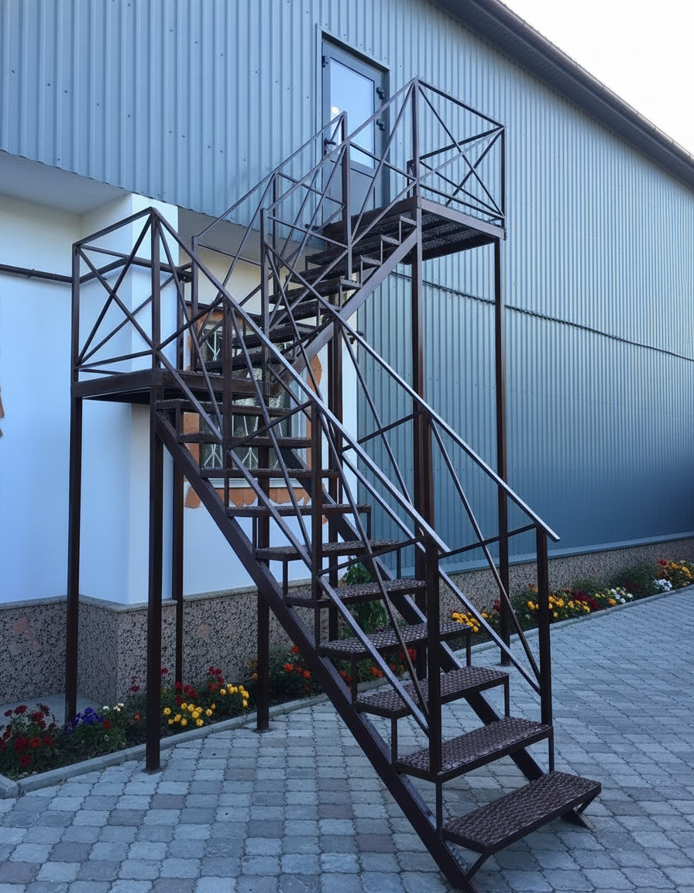
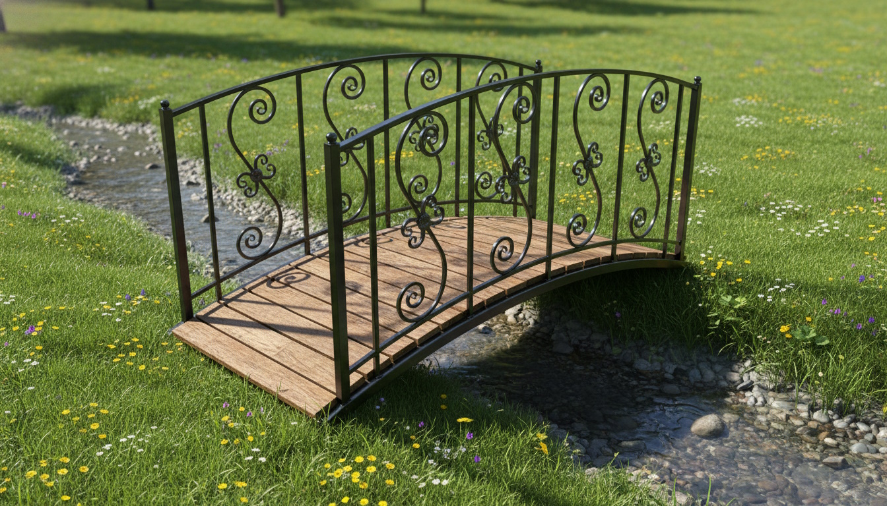
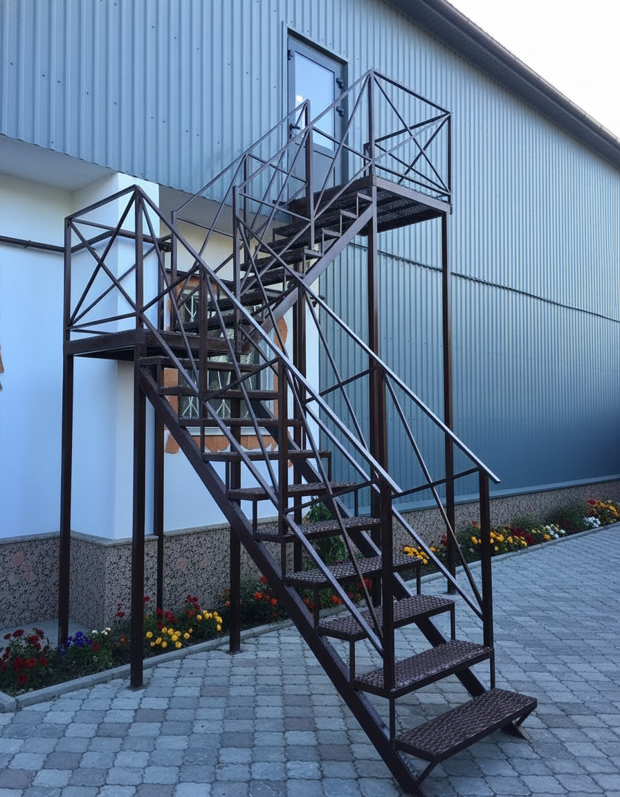
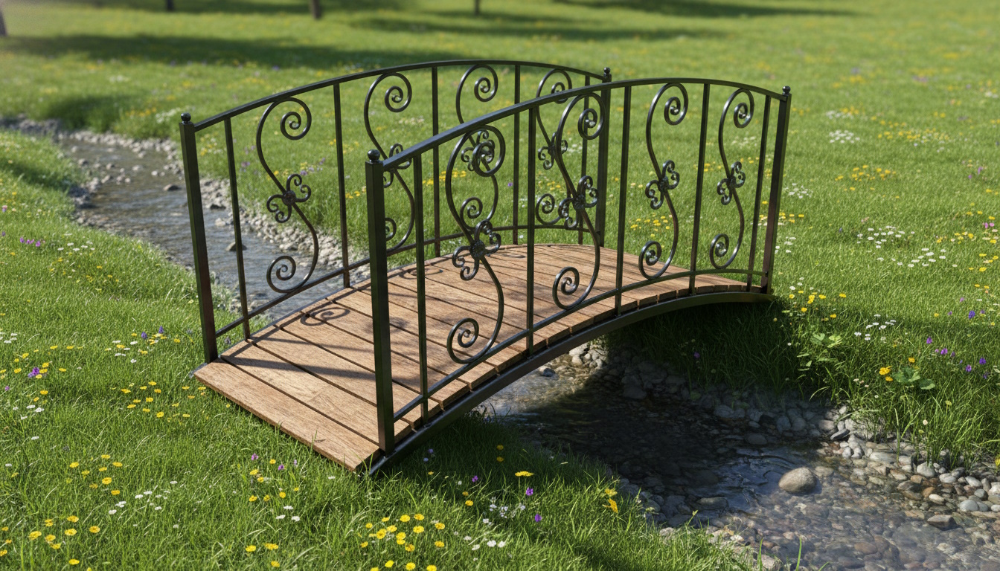

Metallbau & Schweissarbeiten
Herstellung und Montage von Metallkonstruktionen: Treppen, Geländer, Rahmen, Unterkonstruktionen für Modulbau und individuelle Lösungen. Wir kombinieren Schweissarbeiten mit sauberer Ausführung vor Ort und passen die Konstruktionen an bestehende Gebäude oder Anlagen an.
Je nach Projekt fertigen wir im Werk vor und montieren anschliessend auf der Baustelle. Auf Wunsch können die Metallteile grundiert oder beschichtet werden, damit sie zum restlichen Objekt passen und langfristig geschützt sind.
Bilder zu Metallbau & Schweissarbeiten
 



Video zum Projekt (optional)
Falls es ein kurzes Video zu Metallbau- oder Schweissarbeiten gibt, können wir es hier einbinden. Ersetze einfach die ID im YouTube-Link unten.